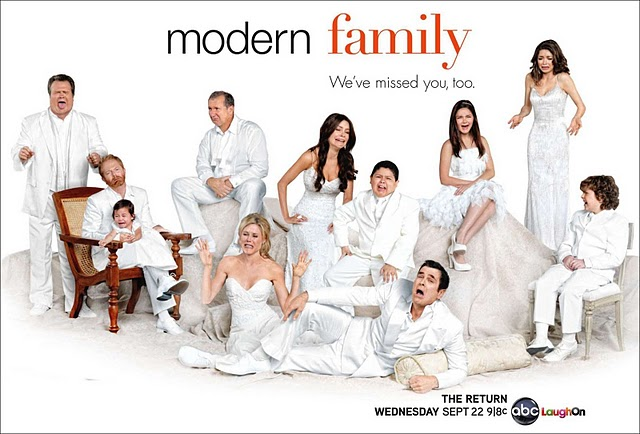

Sarper Bilgay Gülfırat
Hakkımda
Merhaba ben Sarper Bilgay Gülfırat.İzmir'de yaşıyorum.Bilgisayar Bilimleri
4.sınıf öğrencisiyim.Web geliştirme ile ilgileniyorum.Bu eğitim için
Kodluyoruz'a teşekkürler!
İlgi Alanlarım
-
Film
- The Lord of the Rings
- Star Wars
- Godfather
- Dizi
- Game Of Thrones
- Prison Break
- Modern Family
- Kitap
- The Lord of the rings
- Yolda
- Daha
Sevdiğim Diziler
Modern Family

Modern Family, Christopher Lloyd ve Steven Levitan tarafından yaratılan, 23 Eylül 2009'dan beri ABC'de yayınlanmakta olan, komedi tarzında bir televizyon dizisi.
Ayrıca bir "sahte belgesel" olan dizinin bazı sahnelerinde oyuncular doğrudan kameraya konuşmaktadır.